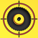
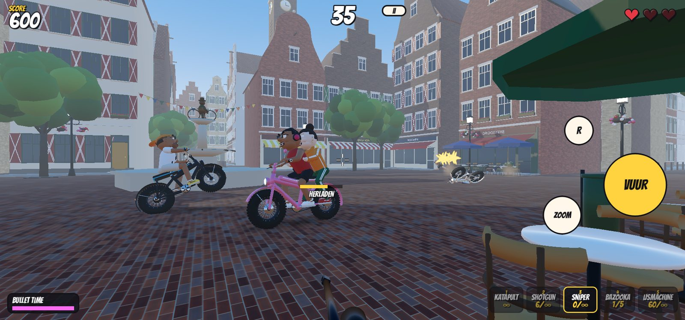
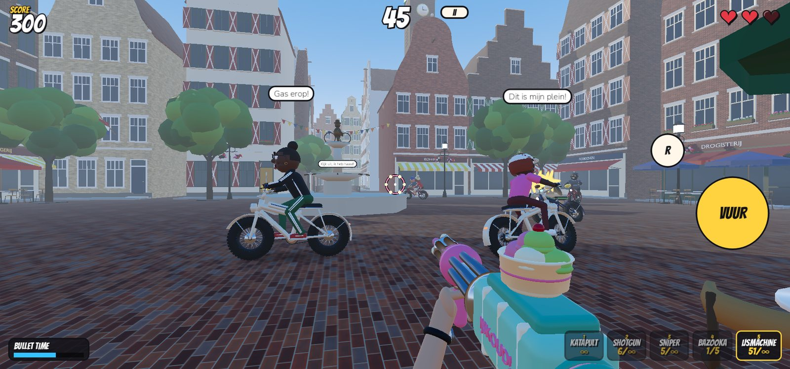
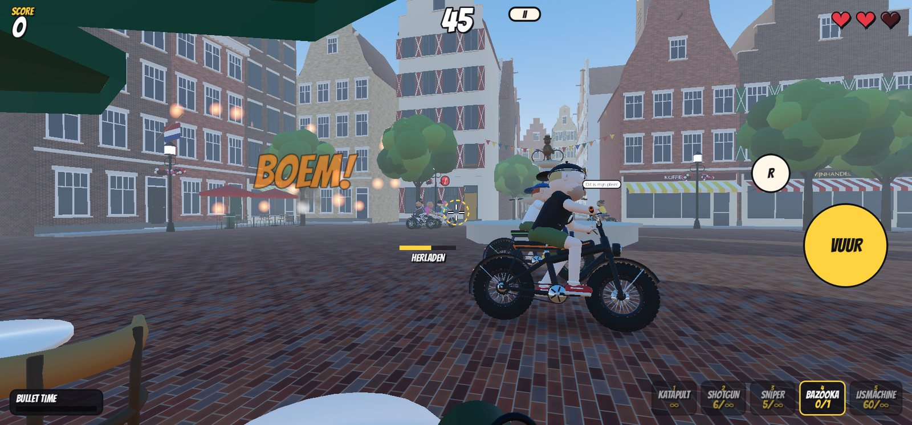
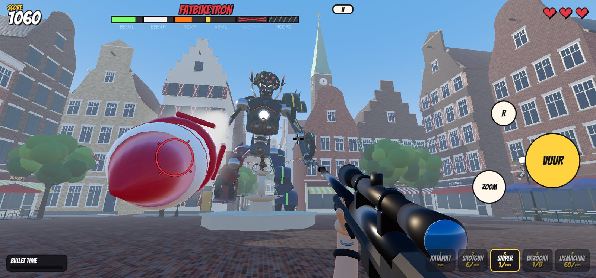
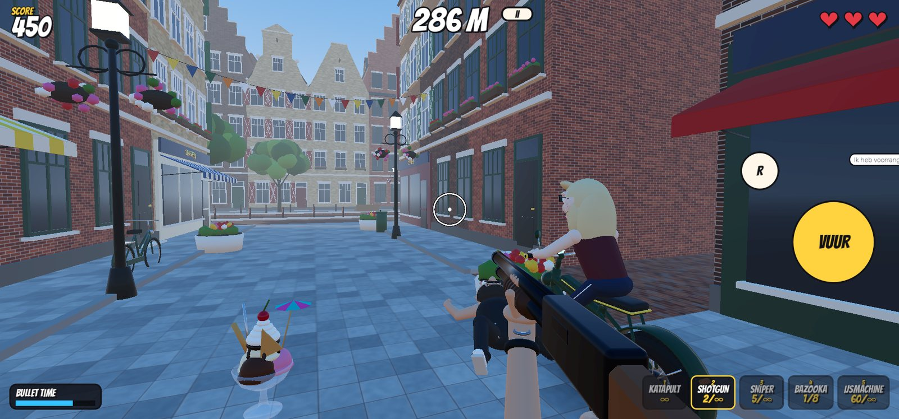
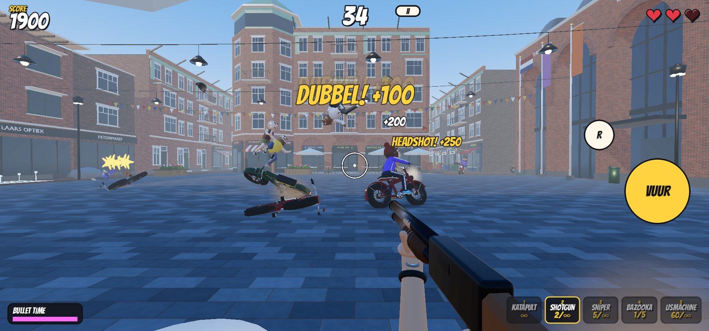

Katapult
Oneindige munitie, stil en met een boogbaan. Voor de kenners.

FATBIKE SNIPER Speel gratisZit. Richt. Schiet. Hoeveel kun jij er neerhalen?
Je zit op een terrasje met een ijsje, tot de fatbikers het plein komen verpesten. Je hebt één minuut en een tafel vol wapens.
Het is zomer op 't Pleintje. De zon schijnt, je ijsje smelt, en dan komen ze: fatbikers. Rondjes om de fontein, toeteren, schelden, en als ze je zien gooien ze een mes naar je hoofd.
Jij blijft zitten. Je richt. Je schiet ze van hun fiets: met een katapult, een shotgun, een sniper, een bazooka of de IJSMACHINE. Ze vliegen met een backflip door de lucht en hun broccolikapsel vliegt eraf. Bloed zie je niet, sterretjes wel.
Oneindige munitie, stil en met een boogbaan. Voor de kenners.
Brede hagel. Sterk dichtbij, zwak op afstand. Raak er meerdere tegelijk.
Zoom in en schiet door een hele rij fatbikers in één keer.
Weinig raketten, lang herladen, en een cartoonexplosie met rondvliegende wielen.
Een machinegeweer dat ijsbolletjes vuurt. Eén bolletje geeft breinvries, twee en ze liggen eraf.
Van tiener met broccolikapsel tot oma met een mand stokbrood. Iedereen kan een fatbiker zijn.
Het duo op één fiets, de speaker-baas met zijn boombox en de wheelie-gozer die op één wiel voorbij scheurt.
Een reuzenrobot van fatbikes. Schiet zijn benen eraf en hij gaat gewoon verder op raketboosters.






"Fatbike Flow": Nederlandstalige hiphop met auto-tune en een fietsbel als percussie. Zet het geluid aan.
Fatbike, fatbike, rondjes om de fontein
Broccoli op je kop, maar zo meteen lig jij op het plein
Fatbike, fatbike, tring tring tring
Ik zit hier met m'n ijsje, en ik mis echt niks, ding!
Het is slapstick. Er vloeit geen bloed: fatbikers vliegen met een backflip van hun fiets, hun kapsel vliegt eraf en er verschijnen sterretjes. De explosies zijn tekenfilmexplosies. Liever helemaal niet beschoten worden? Kies dan het niveau Chill: geen hartjes, geen messen, oneindige munitie.
We hebben iets tegen gescheur over het plein terwijl jij van je ijsje probeert te genieten. De fatbikers in de game zijn een bont gezelschap, van tiener tot opa en oma. Het is een grap, en dat mag.
In je browser speel je gratis. De apps voor iPhone, iPad en Android komen binnenkort.
In de browser op een moderne computer, laptop of tablet. Binnenkort ook als app voor iPhone, iPad en Android, met besturing helemaal voor touch.
Nee. Je scores en instellingen blijven op je eigen apparaat. Lees het privacybeleid.
Een komische 3D-shooter uit Nederland, door één ontwikkelaar gebouwd. Alle modellen, van de fatbikers tot de kerktoren, worden met Python-scripts in Blender gemaakt.
Logo, icoon, screenshots, trailer en deze factsheet.